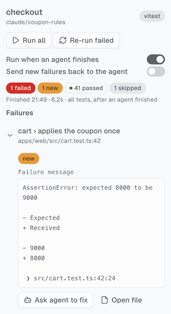

Quick start
-
Install
In Orca, open Settings → Plugins, search for Test Runner, install it and approve its access.
-
Open the panel
Open a workspace, then the Test Runner tab in the right sidebar. Press Run all to check it works.
-
Let an agent work
When it finishes a turn, the related tests run. If one fails, press Ask agent to fix.
From a terminal instead:
orca plugin install h00ns/test-runner-for-orcaUsing the panel
| Control | What it does |
|---|---|
| Run all | Runs every test in the workspace, or in the project picked above it. |
| Re-run failed | Runs only the test files that failed last time. |
| Stop | Stops the run in progress, and what it started, such as Playwright's web server. |
| All projects ⌄ | Shown in a monorepo: pick one package to run only that one. |
| Run when an agent finishes | Turns automatic runs on or off. |
| Send new failures back to the agent | Turns the automatic fix loop on or off. |
| Ask agent to fix | Sends one failure to the workspace's agent. |
| Fix new only Ask agent to fix all | Sends only the new failures, or all of them. |
| Open file | Opens the failing test file in an editor tab. |
Each failure shows its test name, file and line, and the error without the runner's own stack frames. Badges mark what deserves attention:
| 2 failed | Tests that fail now. |
| new | Was passing in the run before, so the latest change most likely broke it. |
| flaky | Failed, then passed when run again. Probably not the change's fault, and never sent to an agent. |
| server not running | Could not connect to a server or database (connection refused). Start the app first, for example pnpm dev. Never sent to an agent. |
| 41 passed | Tests that pass. |
The result also shows in Orca's status bar, for example 2 failed. Pressing it runs the tests.
Working with agents
After an agent finishes
- If the code is the same as at the last run, nothing runs. An agent that only answered a question costs nothing.
- Otherwise, the files changed since the last run pick the tests. Vitest and Jest run only the tests that import them; other runners run their whole suite when their folder changed. Browser tests (Playwright, Cypress) are left out unless you opt them in.
- Failures are re-run once to separate flaky tests, then compared with the run before to mark new ones.
- A notification tells you when tests start failing, and when they pass again.
The first automatic run in a workspace runs everything, because there is no earlier run to compare with. So does a run after a file was deleted or renamed, or in a folder outside git. A run that covers part of the suite keeps the earlier results for the rest; the panel then says, for example, 12 tests ran; earlier results kept for the rest.
Sending failures to the agent
Ask agent to fix types the failure into the workspace's agent as one line, with a command to reproduce it:
The test "cart › applies the coupon once" in apps/web/src/cart.test.ts:42 is failing. Error: AssertionError: expected 8000 to be 9000 … Reproduce with: cd apps/web && npx vitest run src/cart.test.ts -t "applies the coupon once" Fix the code (or the test, if the test itself is wrong) and re-run it until it passes.- It goes to an agent that is idle: finished, or waiting for input.
- It never types into an agent that is working or waiting for permission. You get The agent in this workspace is busy instead.
- With no agent open, it starts the one chosen in settings (Claude Code by default), waits until it is ready, then types the failure.
The automatic fix loop
Off by default. With Send new failures back to the agent on, each automatic run sends the failures the agent caused back to the agent that just finished. It fixes them, finishes, and the tests run again. After 3 rounds (configurable) it stops and tells you.
It only answers the agent that finished, skips a turn you interrupted, and never starts an agent on its own. Failures that were there before the agent started are left alone.
How tests are run
Test Runner does not run your npm test script. It starts each test runner directly, with the options it needs to read the results:
| Runner | Command it runs |
|---|---|
| Vitest | node node_modules/vitest/vitest.mjs run --reporter=json --outputFile=… --passWithNoTests --coverage.enabled=false |
| Jest | node node_modules/jest/bin/jest.js --json --outputFile=… --ci --passWithNoTests --forceExit --coverage=false |
| Playwright | node node_modules/@playwright/test/cli.js test --reporter=junit --pass-with-no-tests |
| Cypress | node node_modules/cypress/bin/cypress run --reporter junit |
| Gradle | ./gradlew test --continue --console=plain (or gradle) |
| Maven | ./mvnw test -fae -B (or mvn) |
| pytest | .venv/bin/python -m pytest --junitxml=… -o junit_family=xunit1 -q (or python3) |
Why not the script:
- It reads a report. Failures come from a JSON or JUnit XML report, so the panel can show each one's file, line and error. A script's console output can't be read reliably.
- It runs part of the suite. Related tests (
vitest related …,jest --findRelatedTests …) and failed files only work when it passes the arguments itself. - It always finishes. A script in watch mode would never end.
- It works with any package manager: npm, pnpm and yarn alike.
It reads your test script only to tell which runner a package uses.
"test": "vitest run --config vitest.unit.config.ts": those options are not used. Copy them into args in .orca-test-runner.json, or let your agent do it.
Runs use your own node (from your PATH, Homebrew, Volta, mise or asdf), with colours off. Coverage is off, so coverage thresholds don't fail a run of part of the suite. CI is not set, so a Playwright config with reuseExistingServer: !process.env.CI still uses the dev server you already run.
Supported runners
| Runner | Found from | After an agent finishes | Re-run failed |
|---|---|---|---|
| Vitest | vitest in package.json, vitest.config.* | related tests | those files |
| Jest | jest in package.json, jest.config.* | related tests | those files |
| Playwright | @playwright/test, playwright.config.* | off by default | those files |
| Cypress | cypress, cypress.config.* | off by default | those files |
| Gradle | build.gradle(.kts), settings.gradle(.kts) | whole suite | whole suite |
| Maven | pom.xml | whole suite | whole suite |
| pytest | pytest.ini, [tool.pytest…] in pyproject.toml, conftest.py | whole suite | those files |
The runner has to be installed: in node_modules, as a Gradle or Maven wrapper, or in a virtualenv.
Monorepos. Test Runner reads pnpm-workspace.yaml or the workspaces field of package.json and makes one project per package and runner. A root that only installs the runner for its packages runs nothing itself. A root config that lists the packages (a Vitest workspace or projects, Jest projects) runs them for them.
Configuration
.orca-test-runner.json in the workspace root tells Test Runner exactly what to run. You need it only when detection is not enough: options in your test script, an unusual layout, environment variables, or browser tests you want run after each agent turn. Commit it, so your team shares it.
{
"$schema": "https://raw.githubusercontent.com/h00ns/test-runner-for-orca/main/schema/orca-test-runner.schema.json",
"projects": [
{ "name": "web", "root": "apps/web", "runner": "vitest", "args": ["--config", "vitest.unit.config.ts"] },
{ "name": "api", "root": "services/api", "runner": "gradle" },
{ "name": "e2e", "root": "apps/web", "runner": "playwright", "autoRun": false }
]
}| Key | Meaning |
|---|---|
projects | What to run, instead of detecting it. Each entry: root (folder from the workspace root; default the root), runner (detected when left out), name, args (added to the command), env, autoRun (run after an agent finishes; default true, false for browser tests). |
ignore | Folders to leave out of detection, when there is no projects. |
autoRunScope | related or all: what runs after an agent finishes, in this workspace. |
env | Environment variables for every project. They are also written into the reproduce command an agent gets. |
Don't put reporter, output file, watch or coverage options in args: Test Runner adds its own. If the file has a mistake, the panel says what and where.
Let your agent write it
Paste this into an agent in the workspace. It writes the file and checks that each suite runs. The panel reads the file the next time it opens.
Set up Test Runner for Orca in this repository by writing .orca-test-runner.json at the repository root.
1. Find every test suite: Vitest, Jest, Playwright, Cypress, Gradle, Maven or pytest. Look at every package.json (workspace packages too) and its test scripts, the runners' config files, build.gradle(.kts), pom.xml and pyproject.toml.
2. Add one entry to "projects" per suite, with "name", "root" (its folder relative to the repository root; leave it out for the root) and "runner" (vitest, jest, playwright, cypress, gradle, maven or pytest).
3. Add "args" only when the suite needs them, such as a config file, taken from how its test script runs it. Never add reporter, output file, watch or coverage options: Test Runner adds its own. Add "env" only for variables the tests need.
4. Set "autoRun": false for slow suites: browser tests (Playwright, Cypress) and tests that need a running server or database.
5. Start the file with "$schema": "https://raw.githubusercontent.com/h00ns/test-runner-for-orca/main/schema/orca-test-runner.schema.json" and keep it valid JSON, without comments.
6. Run each suite once with its runner and those args to check they work. Then tell me what you set up, and anything you left out and why.Settings
Settings → Plugins → Test Runner
| Setting | Default |
|---|---|
| Run tests when an agent finishes | on |
| What runs after an agent finishes | related tests |
| Re-run failures once to catch flaky tests | on |
| Send new failures back to the agent automatically | off |
| Rounds before automatic sending stops | 3 |
| Notify after automatic runs | on |
| Agent to start, when you ask for a fix and none is open | Claude Code |
| Timeout per project | 10 minutes |
Troubleshooting
"No test runner found"
- Install dependencies first (
npm install,pnpm install…): the runner must be innode_modules. - The runner must be named in a package.json (
vitest,jest…) or have its config file. For anything else, add.orca-test-runner.json.
"web: vitest did not finish", with the runner's output
- The runner started but failed before reporting. The output under it says why: often a config file, an alias or an environment variable your test script sets. Move those into
argsorenvin.orca-test-runner.json. - Cannot find native binding (rolldown, esbuild, swc): update Test Runner to 0.2.1 or later.
- exited with code 1 although no test failed: the runner failed after the tests, for example on an unhandled error. The output shows it.
Tests fail with "server not running" (connection refused)
The tests need your app, an API or a database running, and it isn't. Start it (for example pnpm dev) and run them again, or give Playwright a webServer in its config so it starts the app itself.
Tests don't run after the agent finishes
- Check Run when an agent finishes is on.
- They run only when files changed. No tests ran after a turn means no test imports the changed files.
- Browser tests are left out by default.
Playwright never finishes
Playwright 1.49 hangs on Node 24, also outside Orca. Update Playwright.
The panel says "Remote workspace"
SSH workspaces are not supported yet. See Limitations.
Where are the logs?
orca plugin logs h00ns.test-runnerThey show what Test Runner ran and why. Include them when you report a problem.
Screens
Every image is the real panel, drawn by Orca.



Access
Test Runner is a full-access (trusted-worker) plugin, because it starts your test runners as processes. Orca asks you to approve once that it may:
- read workspaces, their terminals and agent status
- open files in an editor tab and focus terminals
- type into agent terminals and start agents: when you press a button, or with the fix loop on
- show notifications and a status bar item
- keep its own storage (the last results per workspace) and settings
It makes no network requests and collects no data.
Limitations
- Local workspaces only. SSH workspaces need a way for plugins to run processes on the remote host, which Orca does not offer yet.
- Open file opens the file at the top: Orca's API cannot open a file at a line yet.
- Only Vitest and Jest pick related tests. Other runners run their whole suite.
Found a problem, or a runner it should support? Open an issue.